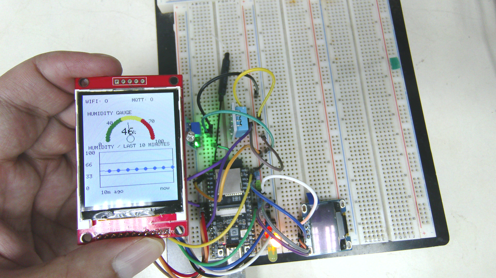
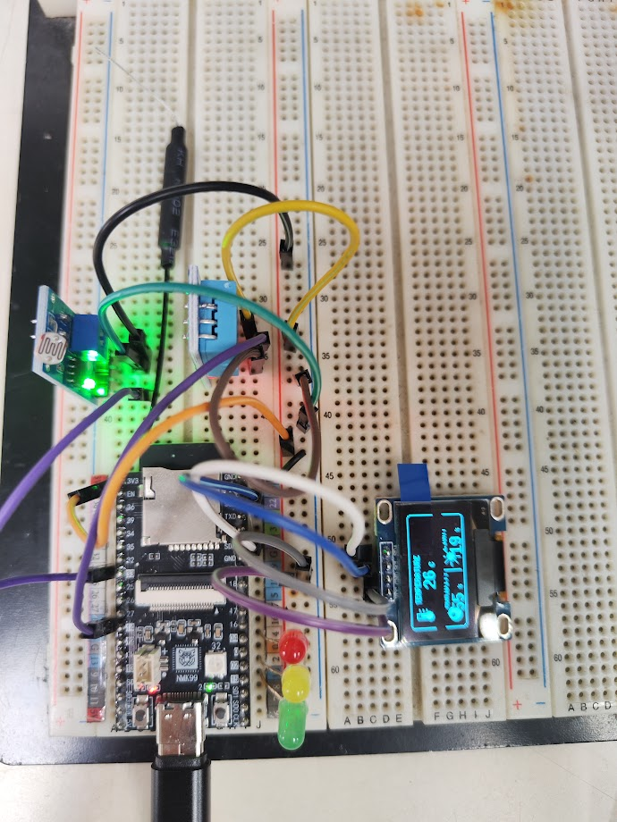
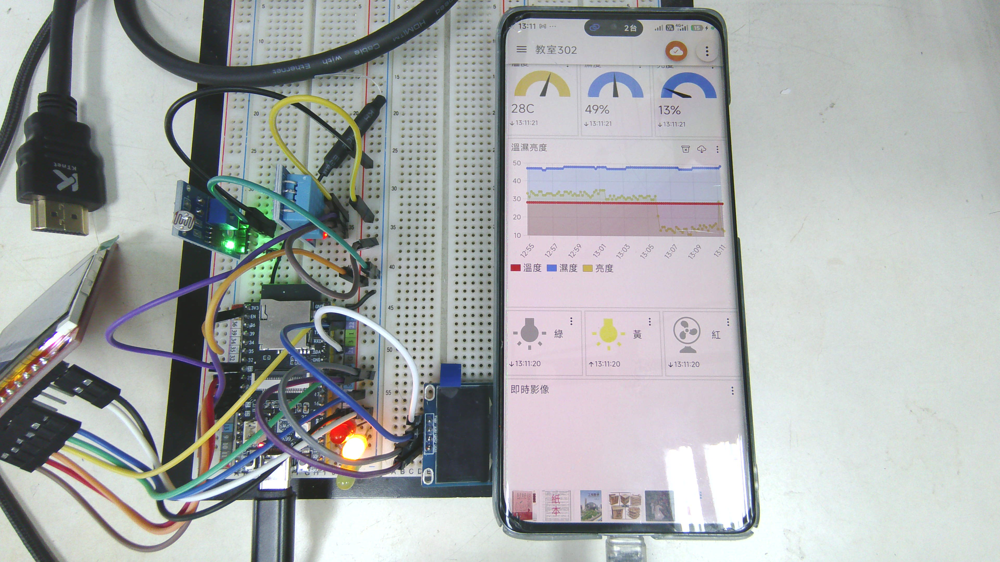
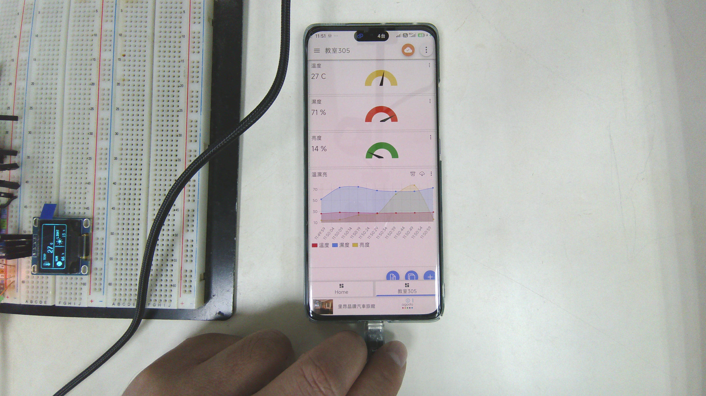
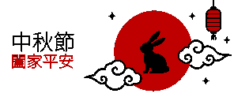

01—08
GPIO & RGB
從 Serial、LED、按鍵、光敏電阻到 RGB PWM 漸變，建立 ESP32 的第一套語言。
查看範例 ↗ESP32 × IoT × Visual Computing
從一顆 LED 開始，逐步串起 DHT11、光線感測、OLED、TFT、電子紙、Wi‑Fi 與 MQTT，打造一套可觀察、可控制、可延伸的 ESP32 實習作品集。
01 / THE IDEA
這個專案不是單一成品，而是一段從基礎電子控制到物聯網系統整合的學習軌跡。每一個資料夾都代表一次實驗：從 GPIO 的高低電位、PWM 的明暗變化，到感測資料被呈現在螢幕、送上雲端，再被遠端指令改變現場狀態。
最後，資料不只存在 Serial Monitor 裡，而是成為一個能被閱讀、被分享、被控制的完整作品。
02 / THE COLLECTION
03 / FIELD NOTES





OPEN SOURCE PROJECT
完整程式、接線設定、成果照片與報告都放在 GitHub。從一個範例開始，建立你的下一個裝置。
前往 GitHub ↗